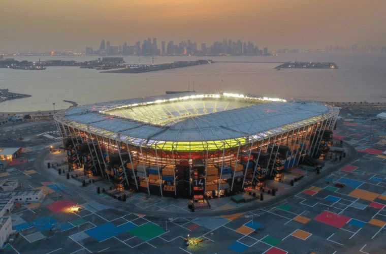
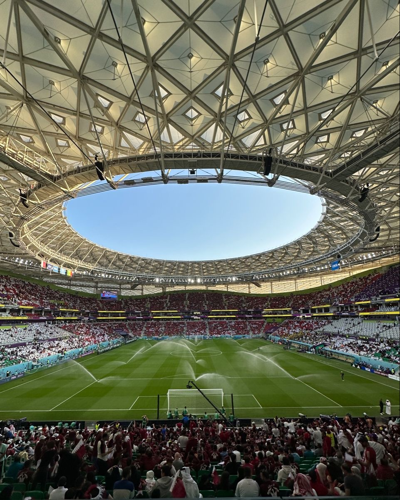

MUNDIAL EN EL MEDIO ORIENTE
¿ Donde Se Jugó ?
El mundial de la FIFA 2022 se realizó en Qaatar , un pequeño pero muy moderno país ubicado en Medio Oriente , especificamente en Asia occidental. A pesar de su tamaño , Qaatar cuenta con una gran insfraestrucutura , ciudades modernas y una economía muy fuerte gracias al petróleo y gas natural.
Este país fue elegido como sede en el 2010 , lo que generó mucha expectativa , ya que nunca antes un Mundial se había realizado en esta región. La capital , Doha , fue el centro principal del evento , donde se concentraron la mayoria de estadios , hoteles y actividades para los aficionados.

¿ Cuando Se Jugó ?
El torneo se llevó a cabo del 20 de noviembre al 18 de diciembre de 2022 , siendo la primera vez que un Mundial se juega en esas fechas. Normalmente , este evento deportivo se realiza a mitad de año (junio y julio), pero en Qatar esto no era posible debido a las altas temperaturas del verano , que pueden superar los 40 grados Celsius
Por esta razón, la FIFA decidió trasladar el mundial a los meses de invierno, donde el clima es más fresco y adecuado para los jugadores y aficionados. Este cambio fue histórico y marcó una gran diferencia respecto a los mundiales anteriores.

¿ Por Qué Fue Diferente ?
El Mundial de Qatar 2022 fue uno de los más únicos en la historia del fútbol por varias razones importantes.
En primer lugar, fue el primer Mundial realizado en Medio Oriente, lo que permitió mostrar al mundo una cultura diferente, con tradiciones, vestimenta y costumbres propias de los países.
Además, destacó por el uso de tecnología avanzada en los estadios, como sistemas de aire acondicionado que mantenían una temperatura adecuada dentro de los recintos, algo nunca antes visto en este tipo de eventos.
También fue especial por que todos los estadios estaban relativamente cerca entre si, lon que permitió a los aficionados asistir a varios partidos en un mismo día, algo muy difícil entre en otros mundiales.
Por último, este Mundial no solo fue un evento deportivo, si no también una oportunidad para que Qatar mostrara su desarrollo, modernidad y capacidad de organizar un evento de gran magnitud.
- Primer Mundial En El Medio Oriente
- Se Jugó En Invierno
- Estadios Con Aire Acondicionado
- Tecnología Avanzada
- Mostró La Cultura Y Tradiciones Árabes
